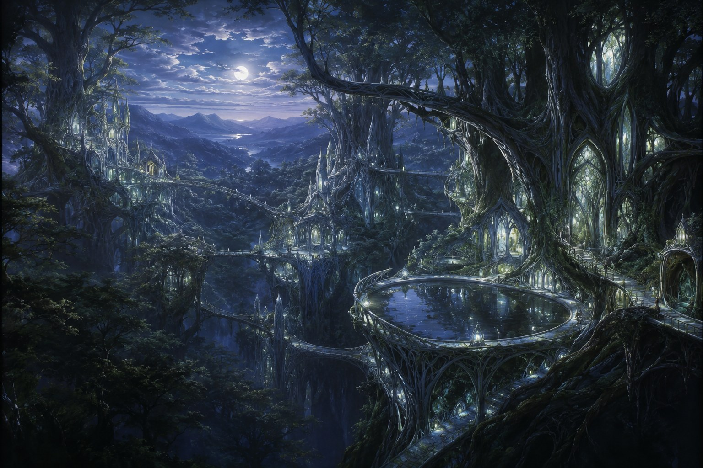
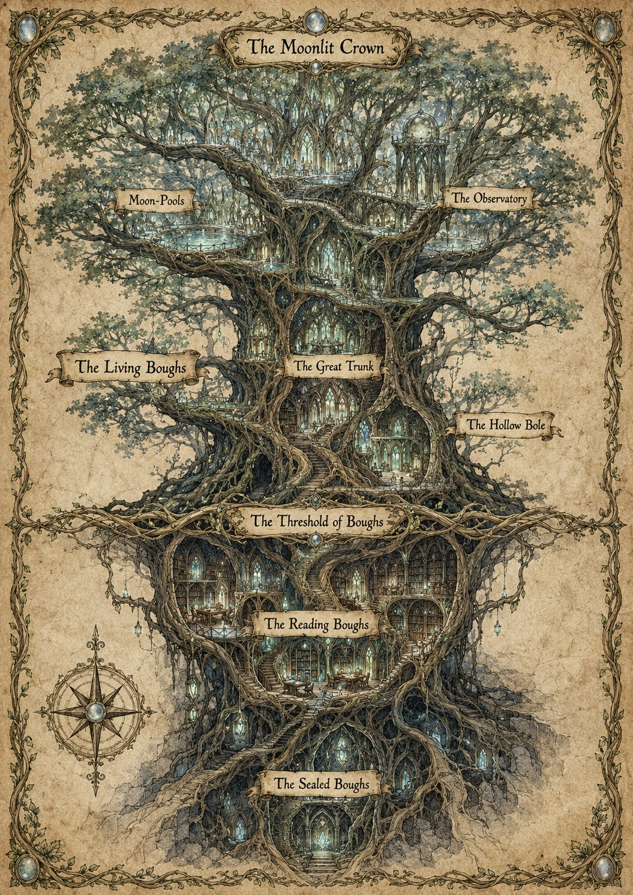
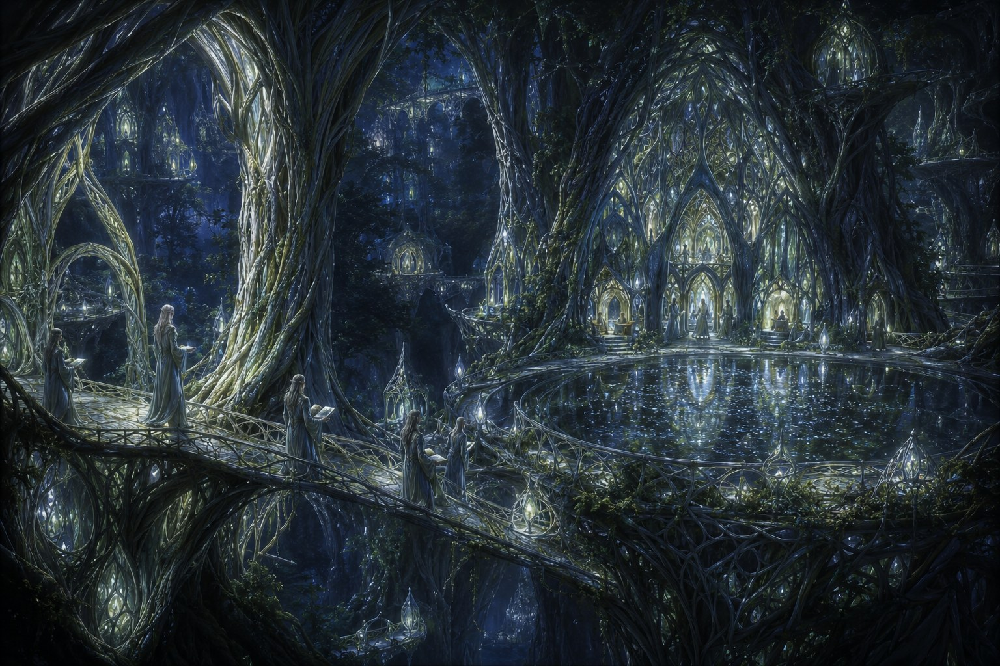

Moonbough¶
Capital of Sylvaris, grown in the great luminous forest of the continent's western reach. If Aurion is where Aetherion is ruled, Khalvar Hold is where it is held up, Cogbarrow is where it is steered, and Tether's End is where it lets go, Moonbough is where it is remembered — the canopy city of the rememberers, where a person's standing is not how high they climb or how deep they dig but how far back they are trusted to read. It is the quietest, slowest, oldest-feeling place on Aetherion, and the only city where a stranger's worth is measured in memory.

Moonbough — the Remembering City, its living halls holding light from the bright canopy down into the old root-dark.The shape of the city — the Remembering City¶
Where Aurion climbs a plateau and a person's station is how high they live, Khalvar Hold is cut downward and a dwarf's standing is how deep she's trusted to go, and Cogbarrow turns inward and a gnome's standing is how far in their work is licensed to sit, Moonbough grows downward in time — and a Sylvari's standing is how far back into the record they are trusted to read. The city is not built but grown: the bright moonlit canopy above, where the young and the public and the visitors live; down through the great living-wood halls of the seven Houses; and down further into the Great Library's stacks, which descend through the canopy city's roots into chambers older than anyone can date.
The honor here is not the height and not the deep for its own sake — it is the age of what you are permitted to remember. You do not climb your way up or buy your way in. You are raised — by scholarship and proven memory — to read deeper into the record. "How far back do you read?" is the question here, and the answer says who you are.
Four tiers descend, canopy to root:
- The Moonlit Crown — the bright public canopy: arrival, the moon-pools, the great Observatory, the suspended gardens, the conservatory schools, and the canopy markets. Anyone may walk here; this is the open face of the city.
- The Living Boughs — the working city: the great living-wood halls of the seven Houses, the homes, the craft-galleries, and the Great Trunk where the Council of Boughs sits.
- The Reading Boughs — the credentialed heart: the Great Library's working stacks, the Archivists' halls, and the Threshold of Boughs that gates the descent. To read here you must hold a grade.
- The Sealed Boughs — the restricted deep: the oldest and most fragile holdings, and the root-dark beneath them, walked only by the Library's most senior Stewards.

The Remembering City as a tree: the bright canopy above, the Library descending through the trunk, the oldest record in the deep roots.Getting around¶
Moonbough gates with the reading-grade. Where Aurion checks you at a guarded gate on every ring, Khalvar at every band, and Cogbarrow by the brass plate, here the gate is how deep into the Library you are cleared to read — earned through the Bough Ascent, the Archivists' annual ceremony that raises a scholar who presents worthy work to a deeper grade of stack-access. The canopy is open to all; the working stacks need a grade; the Sealed Boughs answer only to the Lady of the Library's own grant.
The city is grown, not laid: you climb spiral stairs grown into the great trunks, cross galleries woven of living branch, and ride slow counterweighted moon-glass lifts down through the dark toward the deep stacks. There are no grand staircases of cut stone. The living wood holds a soft light — bright silver-green in the sunlit canopy, deepening to a cool, still silver as you descend — and a Sylvari can tell how deep and how old a place is with her eyes shut, by the colour of the glow.
The Moonglow¶
Moonbough's marvel is that the wood itself holds light — a soft luminescence the Sylvari neither kindle nor put out, brightest in the young canopy and deepening to cool silver in the old root-dark. With it the moon-pools keep still, true reflections, in which the trained read the turning of the seasons and the shape of a coming year. The elves revere it: it is the sign that the wood remembers — that the long record of Sylvaris holds unbroken, that nothing true has been lost. "The wood remembers" and "the boughs hold light" are how a Sylvari says all is well.

The canopy halls by their own light — the Moonglow that the city keeps its memory by.What Moonbough is known for¶
- The Great Library. The largest accumulated archive on the continent, descending through the canopy city's roots into chambers older than any record can date. Its authentication carries continent-wide legal weight; its scholarship is the standard the other nations measure themselves against.
- The Council of Boughs. Confederation rather than monarchy — seven elder Houses, each holding one Bough, deciding by the consensus of all seven. Slow by design. Outsiders find the politics opaque; the Sylvari find that useful.
- Long memory. Elven longevity means the oldest Sylvari remember centuries the rest of Aetherion only reads about, and the conservatories of Moonbough train most of the continent's senior historians, artists, and scribes.
- The moon-pools and the Observatory. House Aelinmoor's still pools and high observatories are the continent's center of astronomy and of the old Sylvari prophetic tradition.
Living here¶
- Speech: Sylvari Elvish in formal contexts; Common in trade. Long names are normal and truncate aggressively in daily use.
- Naming: hyphenated lineage — Saerith-wen-Maeloria, Iolyth-wen-Aerinwë — the wen particle marking maternal descent, often with a House name (of House Silverleaf).
- Aesthetic: woven living wood, suspended walkways, moon-glass, and soft silver luminescence; clothing in greens, silvers, and the occasional deep indigo.
- Manners: Moonbough respects age and memory above blood, charm, or coin. The surest way to earn a Sylvari's regard is to show that you remember accurately, read deeply, and are not in a hurry.
See also¶
- Sylvaris — the nation Moonbough is the capital of.
- The Sylvari Council of Boughs · The Archivists of Moonbough — the two institutions that run the city.
- The Moonlit Crown · The Living Boughs · The Reading Boughs · The Sealed Boughs — the tiers of the city.
- The Great Trunk · The Observatory · The Hollow Bole — the landmarks.